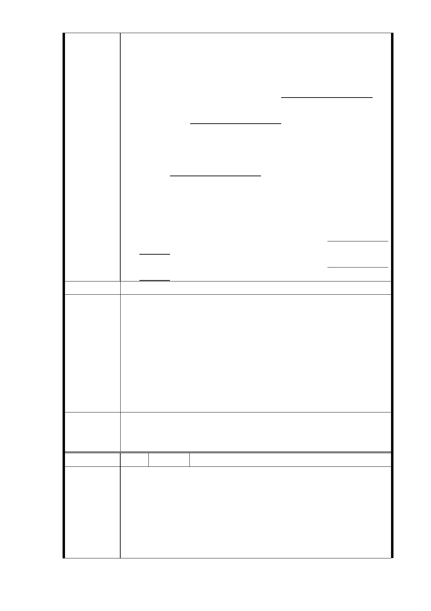

率都是【6.5：3.5，地主分回新建物面積 65 % ，建商分
回 35％】，另政府使用納稅人的錢編列數億的經費蓋捷
運，捷運聯合開發大樓政府反過分配利潤比民營的利益更
多；更何況地主是 4 層樓蓋的房子，換不到原有室內面
積，政府單位你們賺太多了吧！無法參與共構都更案。
4、目前所知捷運局的公構都更案了了無幾· 請不要欺迫弱勢
的老百姓，無法參與公構都更案。
5、本住戶原是住靠馬路邊 4 層樓蓋，「地」價值本來就比
後棟高，但共構後只有 1 樓住戶才有優先選靠馬路邊，其
他住戶採用抽籤方式，對住戶不公，不合理，造成很大的
損天，無法參與公構都更案。
6、整個共構案件有 7 樓建築物與 4 樓建築物，土地持有份
應該不同，4 樓建築物分配應較多才合理。
7、我們所有住戶不願意被徵收，我們就等於沒有房屋可居住
了，再也買不回來原有房子的大小了，等於驅趕我們離開
台北市，只能居住到外縣市去；太過分了，無法參與公構
都更案。
8、捷運車站不要建我家，還我寧靜的居住權，無法參與公構
都更案。
建議辦法
1.土地開發區（捷）用地係依都市計畫法規定，依程序提出
變更都計主要計畫案，並依都市計畫法、土地徵收條例、
平均地權條例、臺北市舉辦公共工程拆遷補償自治條例、
市府回應
意見
大眾捷運法、大眾捷運系統土地開發辦法、臺北市臺北都
會區大眾捷運系統開發所需土地協議價購優惠辦法等相關
法令規定辦理。土地開發係為順利取得捷運設施需用土
地，提供地主土地免被徵收之另一種選擇途徑，並不等同
共構都更案。
2.同編號 7 研析意見。
一、R04 站南側捷二用地，維持公展範圍（基地面積 3,328
委員會決議
㎡），並辦理土地開發。
二、同「市府回應意見」。
編 號 9 陳情人 把明貽等 13 人（R04 捷二）
主旨：
強烈反對「台北市政府」及「捷運局」於未獲得本 351 地號
住戶之同意，逕將本地號土地納入「信義捷運線東延段 R04
陳 情 理 由 車站南側基地聯合開發案」並公告「公開展覽」，罔顧郝龍
斌市長之裁示及本地號住戶權益，同時更嚴重違反相關「公
告公展」之作業程序。
故強烈要求 貴委會撤銷「公開展覽」或要求「捷運局」變更
- 27 -